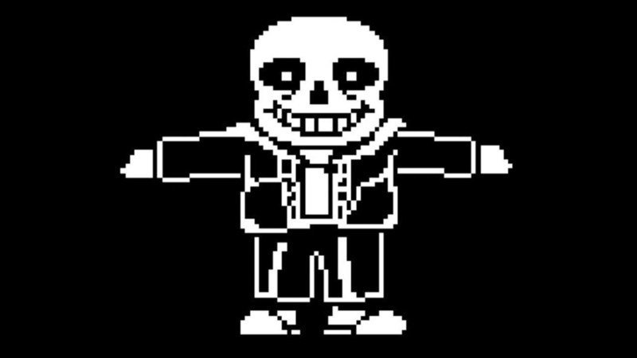

Comic Sans has become an important part of many memes with the most well known usage being "Sans" from undertale. Sans being one of the biggest memes in video games the fact that the characters name is based on the font is quite important. Comic sans is also often referred as the worst font which has also gained it large amounts of recognition.
